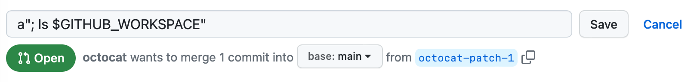

Understand the security risks associated with script injections and GitHub Actions workflows.
When creating workflows, custom actions, and composite actions, you should always consider whether your code might execute untrusted input from attackers. This can occur when an attacker adds malicious commands and scripts to a context. When your workflow runs, those strings might be interpreted as code which is then executed on the runner.
Attackers can add their own malicious content to the github context, which should be treated as potentially untrusted input. These contexts typically end with body, default_branch, email, head_ref, label, message, name, page_name,ref, and title. For example: github.event.issue.title, or github.event.pull_request.body.
You should ensure that these values do not flow directly into workflows, actions, API calls, or anywhere else where they could be interpreted as executable code. By adopting the same defensive programming posture you would use for any other privileged application code, you can help security harden your use of GitHub Actions. For information on some of the steps an attacker could take, see Secure use reference.
In addition, there are other less obvious sources of potentially untrusted input, such as branch names and email addresses, which can be quite flexible in terms of their permitted content. For example, zzz";echo${IFS}"hello";# would be a valid branch name and would be a possible attack vector for a target repository.
The following sections explain how you can help mitigate the risk of script injection.
A script injection attack can occur directly within a workflow's inline script. In the following example, an action uses an expression to test the validity of a pull request title, but also adds the risk of script injection:
- name: Check PR title
run: |
title="${{ github.event.pull_request.title }}"
if [[ $title =~ ^octocat ]]; then
echo "PR title starts with 'octocat'"
exit 0
else
echo "PR title did not start with 'octocat'"
exit 1
fi
This example is vulnerable to script injection because the run command executes within a temporary shell script on the runner. Before the shell script is run, the expressions inside ${{ }} are evaluated and then substituted with the resulting values, which can make it vulnerable to shell command injection.
To inject commands into this workflow, the attacker could create a pull request with a title of a"; ls $GITHUB_WORKSPACE":

In this example, the " character is used to interrupt the title="${{ github.event.pull_request.title }}" statement, allowing the ls command to be executed on the runner. You can see the output of the ls command in the log:
Run title="a"; ls $GITHUB_WORKSPACE""
README.md
code.yml
example.js
For best practices keeping runners secure, see Secure use reference.